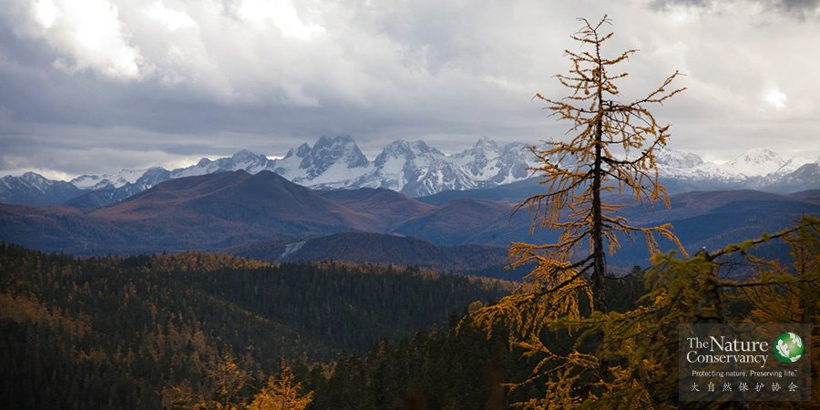
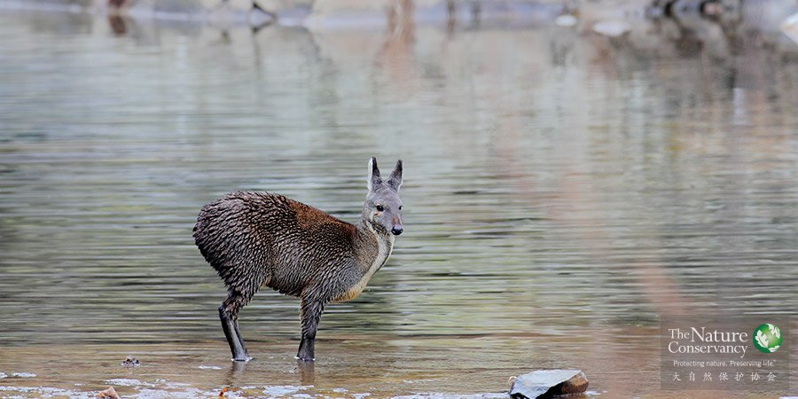
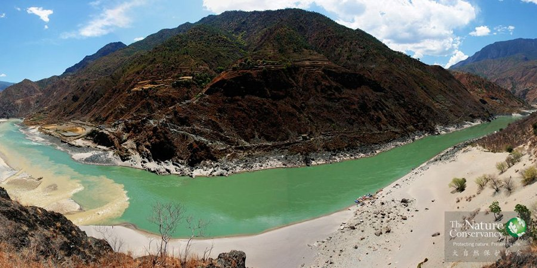
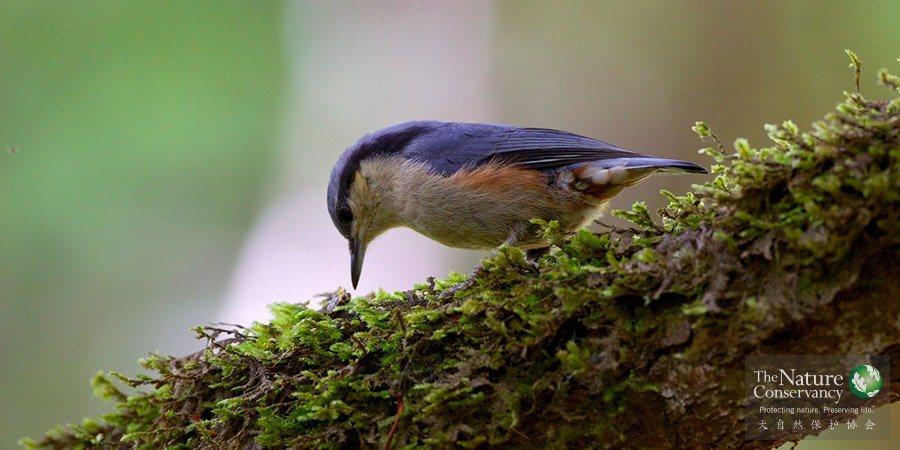

概述

普达措国家公园®TNC
没有一种保护方法是一蹴而就的，每一种成熟的方法都需要经过时间的检验，都需要总结以往保护项目的经验教训得以完善。TNC一直在不断探索，希望找到最有效的方法和工具，帮助所有愿意参与生态保护的人们不断提升保护能力，达到“事半功倍”的效果。
这就需要我们从战略层面思考保护工作，同时密切关注每个保护行动的结果，根据结果再对保护方法进行调整。适应性管理（Adaptive management）就是这样一个过程。以过去可控的结果为基础，从而制定出适应新环境的最佳策略。
适应性管理是一个框架体系，最初应用于商业领域，随着不断发展，目前已经可以根据不同的企业目标，制定不同的方法。下面两种体系就是适应性管理在生态保护领域的体现：
自然保护系统工程（Conservation by Design，CbD）:是TNC长期使用的保护工具和方法。
保护工作开放式评估标准（Open Standards for the Practice of Conservation，OSPC）:与自然保护系统工程（Conservation by Design，CbD）类似，它更多侧重在体现合作伙伴们融合的成果。
无论你运用哪一种工具和方法，关键是先确定要做什么，并利用这些方法来提高保护工作效率，同时，减少在决策过程中的不确定性。以下是TNC在多年实践中，经常使用的两个方法：
生态区评估（Eco-regional Assessment，ERA）: 帮助建立生物多样性保护目标，同时确定在一个或多个生态区域内的优先保护目标。
保护行动规划（Conservation Action Plan, CAP）：为优先保护目标设计发展战略和行动指导。
更多信息请访问TNC保护方法宝库。
自然保护系统工程（Conservation by Design，CbD）

四川老河沟林麝®TNC
坚持多方协作，坚持以科学为基础的保护方法和标准化分析方法，是TNC进行所有保护工作的前提。在这样的前提下，TNC可以甄选出有必需得到保护的生物多样性及优先保护的区域，制定保护方案，并衡量保护成效。这套保护方法及标准化的分析方法构成了“自然保护系统工程”（Conservation By Design，CbD）的核心内容。
以科学为基础的保护方式
保护方法的核心理念简单明了，具体表现为一个四步循环、灵活可调适的管理架构：
1）确定目标和优先对象；
2）制定对策；
3）实施行动；
4）进行成效评估。
确定保护目标和优先对象
保护目标指TNC期望取得的生物多样性保护成果。一方面，基于当前条件下最优的科学信息制定长期目标，确立物种和生态系统的丰富度和地理分布，以确保地球上所有生物多样性得以长期保护。另一方面，TNC也会设定近期目标。为了最有效地推进保护目标的实现，TNC确立了优先对象，包括那些最需要得到保护的自然区域，急需控制的生物多样性威胁因子，以及具有战略意义和实现事半功倍的种种机遇。
制定对策
根据优先对象，TNC与合作伙伴携手制定具有针对性的保护对策以促进保护目标的实现。我们根据自身对生态学及生物多样性所面临的威胁认识，结合各种影响生物多样性的政治、经济和社会状况，制定相应的保护对策。TNC致力于寻求兼顾物种保护、生态系统保护和民众需求多方利益的解决方案。在实行这些解决方案时，保护工作者往往还需要与全球、区域和局部不同层面的保护对策相配合。
采取行动
根据保护对策的要求，通过在局部、区域和全球层面采取保护行动，TNC致力于在保护地取得保护实效。在资源配置方面，我们主要的人力和资金都投入到保护对策（与合作伙伴共同制定）的实施方面。虽然我们的保护行动丰富多样、灵活迅捷，但通常都包含以下几种内容：
--进行科学调研，为决策提供依据；
--保护和管理陆地以及水域；
--与多种团体结成战略伙伴同盟；
--协助制定和实施有利于自然保护的公共政策、工作方式和激励措施；
--提高各级政府和民间组织的保护能力，为取得保护成效奠定基础；
--开发并示范创新性的保护方法；
--提升生物多样性保护理念，争取广泛支持；
--通过政府和民间渠道筹集保护资金。
评估成效
TNC衡量保护成效主要为了解决两个问题：一、生物多样性现状如何？二、我们的保护行动是否达到预期效果？第一个问题涉及对物种和生态系统的健康状况进行评估，第二个问题则具体评估我们保护对策和保护行动的有效性。通过跟踪我们的工作进展并评估保护对策与保护行动的效果，我们可以获得所需的反馈信息，并相应调整我们的目标、优先对象和对策，从而确定新的工作方向。
“中国生物多样性保护远景规划”（也称为“蓝图项目”），“滇西北替代能源项目”，“美国圣米盖尔河流域项目”（San Miguel Watershed）等多个项目均是运用CbD进行项目设计并取得了成功。
保护工作开放式评估标准（Open Standards for the Practice of Conservation，OSPC）
云南永芝®TNC
为了达成既定的保护目标，必须识别出最行之有效的保护行动，因此我们开发出保护工作开放式评估标准（Open Standards for the Practice of Conservation，OSPC），作为衡量保护行动效果的工具。
OSPC提供的是一个宏观层面的指导，它将通用的概念，方法，保护领域管理模式以及监测体系都汇集在一起，以帮助我们更好地提升保护成效。
更多信息，请访问这里。
保护行动规划（Conservation Action Plan，CAP）

金沙江®TNC
保护行动规划（Conservation Action Plan，CAP）就是项目管理原理在保护领域的运用，它遵循项目管理的逻辑框架，是保护项目的管理工具。虽然名称是“保护行动规划”，但实际上涵盖了项目生命周期管理的全过程，包括项目的计划、实施、监测评估等各个阶段。
CAP遵循“确定保护目标和对象、制定保护对策、开展保护行动、评估保护成效”的适应性管理框架（Adaptive Management） ，运用CAP实际就是在开展适应性管理。
主要包括：确定项目人员；确定项目范围和重点保护对象；评估重点保护对象的生存力；确定关键威胁因子；完成综合分析；制定保护对策——目标和行动；制定评估方案；制定行动和评价工作计划；开展保护行动和评估；分析、学习、调整和交流等十个步骤。
CAP方法可以广泛适用于制定各种规模和类型的保护规划，从项目地到保护区乃至更大的范围。该方法由TNC根据合作伙伴和自身的大量项目实例经验开发而成，并经过了众多一线保护工作者的实践检验。全球已经有二十多个国家、地区和机构采用了这一方法。
生态区评估（Eco-regional Assessment，ERA）

栗臀鳾®TNC
生态区评估（Eco-regional Assessment，ERA）就是以一个地区的生物多样性现状、物种栖息地情况、所受威胁、以及社会经济情况为基础，设定保护优先区。它是TNC长期应用的科学方法之一。
生态区评估将生态区域整体作为评估的一个部分，可以将一个或者几个生态区域作为一个整体进行评估，以协助保护工作者绘制出保护优先区地图。在这张地图上，将明确标示出生物多样性、物种栖息地、威胁因子以及其他影响当地生态状况的各类数据。
这些数据将为我们设定长期的保护目标提供支持，同时也为我们在更大范围内设定生态保护优先级提供了基础。
更多信息请访问生态区域评估工具箱和生态区域评估和生物多样性愿景标准。
保护项目
 内蒙古
内蒙古
气候变化、水资源短缺和生物多样性丧失，已经成为全球最为严重的环境问题，内蒙古作为保障我国生态安全的重要屏障，深受这些环境问题的影响——由于上述的三个环境问题，生态系统逐渐退化，屏障功能日渐削弱，严重威胁到了我国的可持续发展，脆弱的生态急需修复。
自1958年建立第一个自然保护区以来，中国现已建成2600多个不同类型的自然保护区，约占国土面积的15.13%，初步构建了中国的自然保护体系。然而，缺乏可持续的充沛的资金投入、缺乏统筹规划以及管理能力不足等因素仍然极大地制约着自然保护区功能的有效发挥。
自古，云南就以丰富的动植物资源和壮美的景色吸引着世人的目光。在这片青藏高原至云贵高原的过渡地带，高山挺立、峡谷纵横。怒江、澜沧江、金沙江，东西排列，形成了地球唯一的“三江并流”奇观。巨大的海拔高差与复杂的地形，形成了集雄、奇、险、秀、幽为一体的丹霞地貌，孕育了丰富而独特的生物多样性。
 长江项目
长江项目
长江，在中华民族的历史上有着举足轻重的位置。从滚滚长江东逝水的壮阔，到共饮长江水的温婉，这条世界第三长河，滋养了中华儿女的体魄，丰富了炎黄子孙们的精神，成为了我们的精神图腾。今天，占国土面积1/5的长江流域不仅继续养育了全国1/3的人口，生产了全国1/3的粮食，而且还是中国经济增长最有活力、最具潜力的地区。